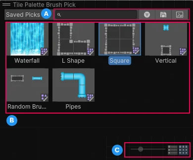

Explore the settings you can use to save and reuse tile selections. For more information, refer to Save and reuse a tile selection with Brush Picks.
To open the overlay, select Brush Picks Overlay in the Tile Palette window.

| Property | Icon | Description |
|---|---|---|
| Filter text | N/A | Sets the text to filter the displayed brush picks with. |
| Filter | Filters the brush picks to those that match the active brush type. | |
| Save | Saves the tiles you selected with the Pick tool as a Brush Pick. | |
| Hide Brush Picks on Pick | N/A | Hides the overlay when you select a Brush Pick to paint with. |
| Slider | N/A | Sets the size of the thumbnails in the overlay. If you set the size to small, the thumbnails automatically display as a list. If you set the size to large, the thumbnails automatically display as a grid. |
| View Picks in a List | N/A | Displays the thumbnails as a list. |
| View Picks in a Grid | N/A | Displays the thumbnails in a grid. |